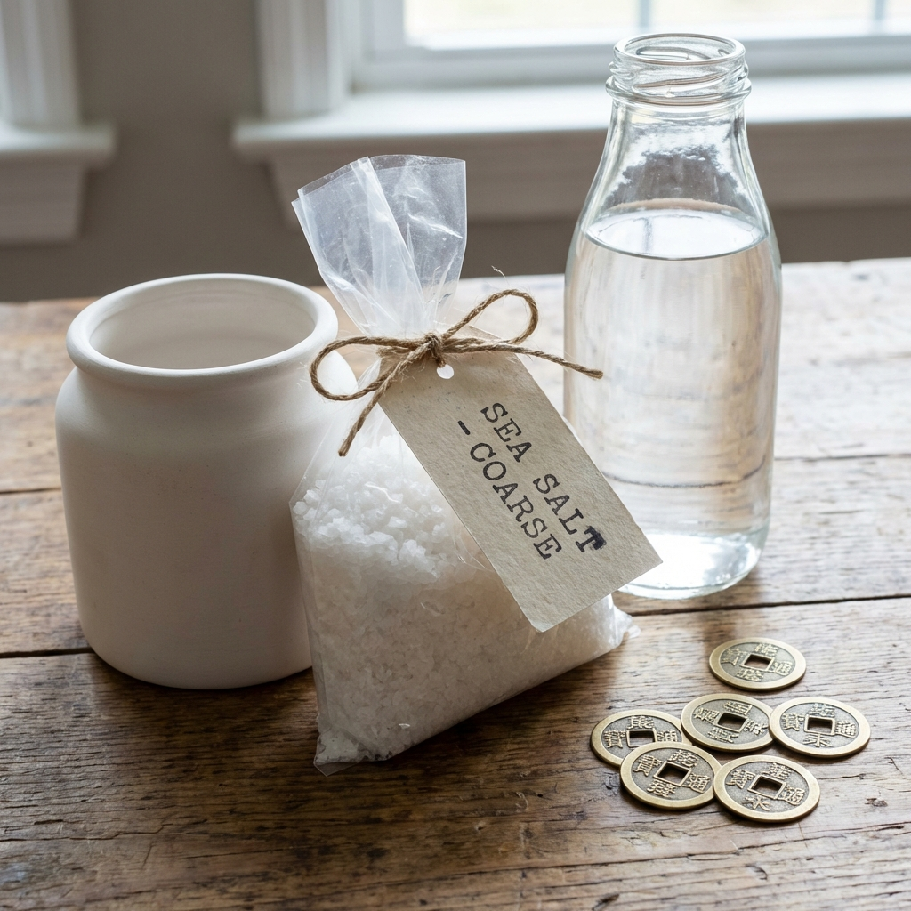

Annual pressure
South
Tai Sui sits here with the 5 Yellow. Keep it quiet, stable, and respectful.
2026 master archive
Mystical guidance rendered as a living dashboard for the Year of Bing Wu: flying stars, annual pressure points, zodiac timing, and day-master resonance.
Annual pressure
Tai Sui sits here with the 5 Yellow. Keep it quiet, stable, and respectful.
Protective stance
Three Killings asks for careful posture and guardians placed with intention.
Opportunity
Wealth, momentum, and visibility are strongest when these sectors stay active and clean.
Flying Stars
Choose a sector to reveal its active star, what it amplifies, what to avoid, and which traditional cure best matches the palace.
Selected sector
Influence
Primary cure
Avoid
Element
Placement guidance

Annual Afflictions
These are not zones to fear. They are zones to handle with better posture, lower ego, and stronger environmental discipline.
12 Zodiacs
These snapshots are written as strategic moodboards: where to push, where to conserve, and what kind of personal climate each sign moves through in 2026.
Enter a year to spotlight the matching zodiac card.
Day Master Resonance
Your Day Master is the heavenly stem of your birth day. This tool calculates the day pillar from the 60 Jia Zi cycle and then reads how that element meets 2026 fire.
Awaiting input
The result will show your heavenly stem, 60-cycle pillar, and how the element interacts with 2026.
Relationship to 2026
Waiting for a date.
Focus
Use the result to guide pacing, recovery, and timing.
Enter your birth date for a more personal reading of how this Fire Horse year interacts with your own element.